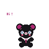
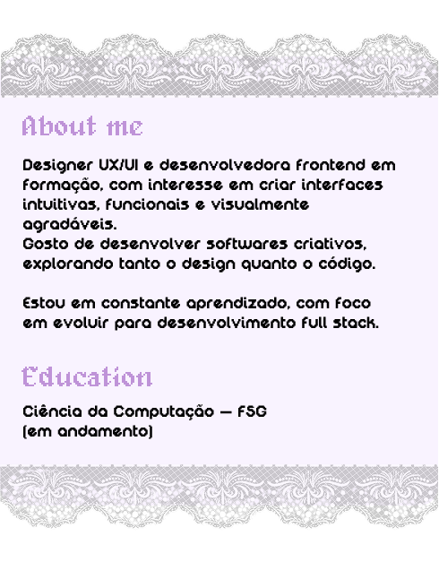
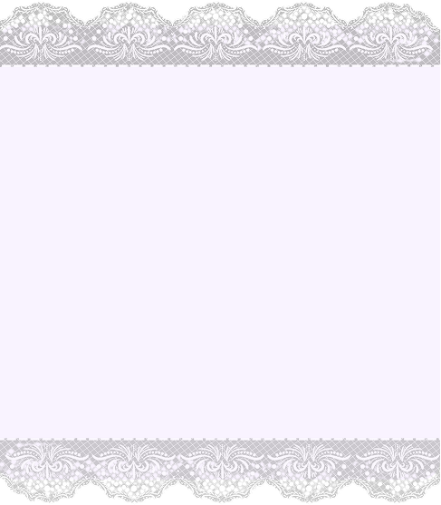
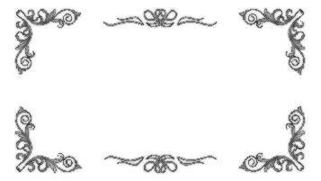
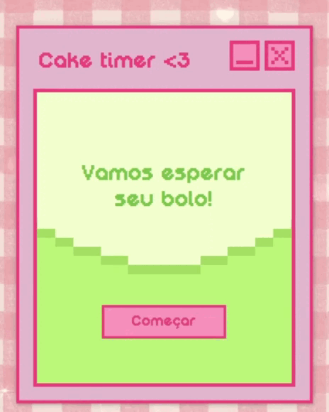
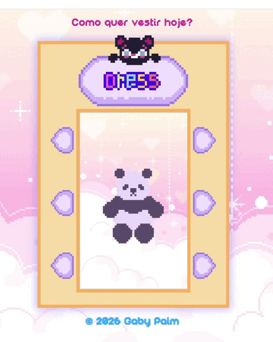

Contacts
paimfontanagabriely@gmail.com
(54) 99329-0051

paimfontanagabriely@gmail.com
(54) 99329-0051

Desenvolvedora frontend em formação, com interesse em criar interfaces intuitivas, funcionais e visualmente agradáveis.
Gosto de desenvolver softwares criativos, explorando tanto o design quanto o código.
Estou em constante aprendizado, com foco em evoluir para desenvolvimento full stack.
Ciência da Computação — FSG (em andamento)




O CakeTimer é um app desktop feito com Electron para controlar o tempo de forno dos bolos. Você escolhe o tipo e o contador já começa com a duração correta, mostrando tudo na tela.
Cada bolo tem sua própria imagem e tempo configurado, então não precisa ficar conferindo relógio ou lembrando minutos.
A ideia do projeto foi simplesmente deixar esse processo mais prático e visual do que usar um cronômetro comum.

O Dress Game é um joguinho de navegador que eu fiz usando HTML, CSS e JavaScript para montar looks do jeito que quiser.
Há um panda na tela e as peças, como chapéu, camiseta e calças, podem ser trocadas ao clicar. As imagens mudam na hora, permitindo testar combinações.
Criei esse projeto para praticar e desenvolver algo simples e criativo, com uma estética inspirada nos jogos antigos, como os do Game Boy Advance, trazendo uma sensação dos anos 2000.